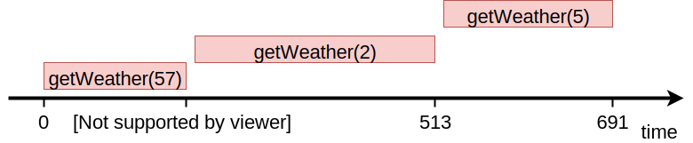
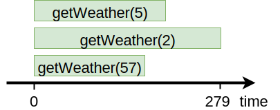
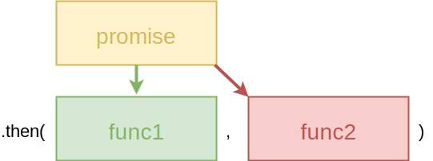
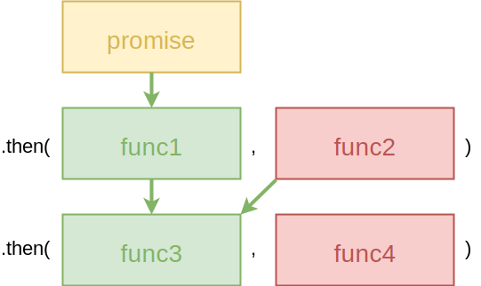
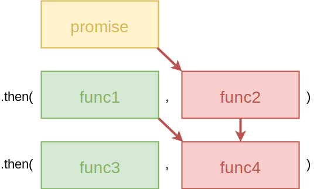

Асинхронный код. Часть II
Исаков Федор
Повторение
В любой момент времени, любой участок кода исполняется в единственном потоке.
Run-to-Completion
let counter = 0;
counter++;
console.log(counter); // 1
Now & Later
console.log('Я выполняюсь сейчас');
setTimeout(() => {
console.log('Я выполнюсь позже');
}, 5000);
console.log('Я тоже выполняюсь сейчас');
Now ...
console.log('Я выполняюсь сейчас');
setTimeout(() => {
console.log('Я выполнюсь позже');
}, 5000);
console.log('Я тоже выполняюсь сейчас');
... & Later
console.log('Я выполняюсь сейчас');
setTimeout(() => {
console.log('Я выполнюсь позже');
}, 5000);
console.log('Я тоже выполняюсь сейчас');
Event Loop
const eventLoop = [];
while (true) {
if (eventLoop.length > 0) {
const event = eventLoop.shift();
event();
}
}
Инструменты
- callback
- promises
- async await
callback
Hey, I'm going to suspend execution for now, but whenever you finish with that network request, and you have some data, please call this function back.
Пример
setTimeout(() => {
console.log('Я выполнюсь через 5 секунд');
}, 5000);
Аргументы
const cb = (error, data) => {
if (error) {
console.error(error);
} else {
console.log(data);
}
}
Нелинейный код
console.log('A');
setTimeout(() => {
console.log('B');
setTimeout(() => console.log('C'), 5000);
console.log('D');
}, 5000);
console.log('E');
A → E → B → D → C
callback hell
setTimeout(() => {
fs.readFile('./path.json', (err, data) => {
request(data.url, (err, res, body) => {
setTimeout(() => {
const data = JSON.parse(body);
console.log(data.fact);
}, 1000);
});
});
}, 5000);
Задача
Получить текущую температуру воздуха при помощи API погоды
Пример
https://api.weather.yandex.ru/v1/forecast?geoid=54
index.js
const getWeather = require('./getWeather');
getWeather(54, (error, temp) => {
if (error) {
console.error(error);
} else {
console.log(temp); // -3
}
});
getWeather.js
const request = require('request');
const getWeather = (geoid, cb) => {
const url = `https://.../?geoid=${geoid}`;
request(url, (err, res, body) => {
if (err) {
cb(err);
} else {
const data = JSON.parse(body);
cb(null, data.fact.temp);
}
});
}
module.exports = getWeather;
Необработанные исключения
const request = require('request');
const getWeather = (geoid, cb) => {
const url = `https://.../?geoid=${geoid}`;
request(url, (err, res, body) => {
if (err) {
cb(err);
} else {
const data = JSON.parse(body);
cb(null, data.fact.temp);
}
});
}
module.exports = getWeather;
Error 404: Not found :-(
Задача
Вычислить среднюю температуру воздуха по области используя API погоды
index.js
const getWeather = require('./getWeather');
getWeather(54, (err, t1) => {
getWeather(2, (err, t2) => {
getWeather(5, (err, t3) => {
console.log((t1 + t2 + t3) / 3);
});
});
});
index.js
const getWeather = require('./getWeather');
console.time('time');
getWeather(54, (err, t1) => {
getWeather(2, (err, t2) => {
getWeather(5, (err, t3) => {
console.log((t1 + t2 + t3) / 3);
console.timeEnd('time'); // 691ms
});
});
});
Последовательно
Параллельно
index.js
const t = [];
const cb = (err, temp) => {
t.push(temp);
if(t.length === 3) {
console.log((t[0] + t[1] + t[2]) / 3);
}
}
getWeather(54, cb);
getWeather(2, cb);
getWeather(5, cb);
async.js
const getWeather = require('./getWeather');
const async = require('async');
async.parallel([
cb => getWeather(54, cb),
cb => getWeather(2, cb),
cb => getWeather(5, cb)
], (err, t) => {
console.log((t[0] + t[1] + t[2]) / 3);
});
Итого
- Простая абстракция
- Нелинейный код
- callback hell
- Необработанные исключения
- Сложный код когда несколько асинхронностей
Вот бы вместо
const getWeather = require('./getWeather');
getWeather(54, (error, temp) => {
if (error) {
console.error(error);
} else {
console.log(temp);
}
});
... можно было писать
const getWeather = require('./getWeather');
getWeather(54)
.then(temp => console.log(temp))
.catch(error => console.error(error));
... или даже
const getWeather = require('./getWeather');
getWeather(54)
.then(console.log)
.catch(console.error);
... а параллельность так
waitAllAsync([
getWeather(54),
getWeather(2),
getWeather(5)
])
.then(t => console.log((t[0] + t[1] + t[2]) / 3))
.catch(console.error)
promises
🎉
getWeather.js
const request = require('request');
const getWeather =
geoid => new Promise((resolve, reject) => {
const url = `https://.../?geoid=${geoid}`;
request(url, (err, res, body) => {
if (err) {
reject(err);
} else {
const data = JSON.parse(body);
resolve(data.fact.temp);
}
});
});
module.exports = getWeather;
index.js
const getWeather = require('./getWeather');
getWeather(54)
.then(console.log, console.error);
unresolved → resolve
resolvereject- Произошло исключение
Чейнинг промисов
Promise

Вызов метода .then возвращает новый промис
success
error
Хэлперы
const identity = data => data;
const thrower = error => { throw error; };
const getWeather = require('./getWeather');
getWeather(54)
.then(console.log, console.error);
const getWeather = require('./getWeather');
getWeather(54)
.then(console.log, thrower)
.then(identity, console.error);
Задача
Получить температуру воздуха при помощи API погоды и записать результат в файл.
getWeather
const request = require('request');
const getWeather =
geoid => new Promise((resolve, reject) => {
const url = `https://.../?geoid=${geoid}`;
request(url, (err, res, body) => err ?
reject(err) :
resolve(body));
});
getWeather(54)
.then(JSON.parse, thrower)
.then(identity, () => ({ fact: { temp: 0 } }))
.then(
data => console.log(data.fact.temp),
thrower
);
saveToFile
const fs = require('fs');
const saveToFile =
data => new Promise((resolve, reject) => {
fs.writeFile('./result.json', data, err => err ?
reject(err) :
resolve('success'));
});
getWeather(54)
.then(JSON.parse, thrower)
.then(identity, () => ({ fact: { temp: 0 } }))
.then(
data => saveToFile(data.fact.temp)
.then(console.log, thrower)
.then(identity, console.error),
thrower
);
В .then можно передать функцию, которая вернет промис.
Выполнение цепочки продолжится когда промис выполнится.
getWeather(54)
.then(JSON.parse, thrower)
.then(identity, () => ({ fact: { temp: 0 } }))
.then(
data => saveToFile(data.fact.temp),
thrower
)
.then(console.log, thrower)
.then(identity, console.error);
getWeather(54)
.then(JSON.parse, thrower)
.then(identity, () => ({ fact: { temp: 0 } }))
.then(
data => saveToFile(data.fact.temp),
thrower
)
.then(console.log, thrower)
.then(identity, console.error);
getWeather(54)
.then(JSON.parse)
.catch(() => ({ fact: { temp: 0 } }))
.then(data => saveToFile(data.fact.temp))
.then(console.log)
.catch(console.error);
Promise.all
Promise.all([
getWeather(54),
getWeather(2),
getWeather(5)
])
.then(t => console.log((t[0] + t[1] + t[2]) / 3))
.catch(console.error)
Promise.resolve
Promise
.resolve(' УДАЛЯЕМ Лишние пробелы ')
.then(data => data.trim())
.then(data => data.replace(/\s+/g, ' '))
.then(data => data.toLowerCase())
.then(console.log);
// удаляем лишние пробелы
Promise.reject
Promise
.reject('error')
.then(identity, console.error); // "error"
Итого
- Сложная абстракция
- Более линейный код
- Избавились от callback hell
- Нет необработанных исключений
- Легче писать сложную логику

bluebird
const Promise = require('bluebird');
Promise
.props({
ekb: getWeather(54),
spb: getWeather(2),
msk: getWeather(5)
})
.then(({ ekb, spb, msk }) => {
console.log((ekb + spb + msk) / 3);
});
Этот код выглядит хорошо ...
getWeather(54)
.then(JSON.parse)
.catch(() => ({ fact: { temp: 0 } }))
.then(console.log)
.catch(console.error);
... но так понятнее
try {
const body = await getWeather(geoid);
return JSON.parse(body);
} catch (error) {
return { fact: { temp: 0 }
}
await указывает на то,
что нужно дождаться выполнение промиса.
Если промис зарезолвился - вернется результат,
иначе возникнет исключение.
async await
const getTempData = async geoid => {
try {
const body = await getWeather(geoid);
return JSON.parse(body);
} catch (error) {
return { fact: { temp: 0 } };
}
}
При вызове асинхронной функции получаем promise

const run = async () => {
const data = await getTempData(54);
return await saveToFile(data.fact.temp);
}
run()
.then(console.log)
.catch(console.error);
Итого
- Сложная абстракция
- Линейный код
- Избавились от callback hell
- Нет необработанных исключений
- Легче писать сложную логику